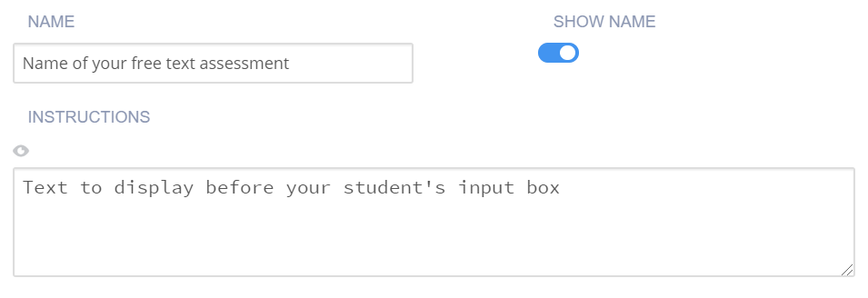
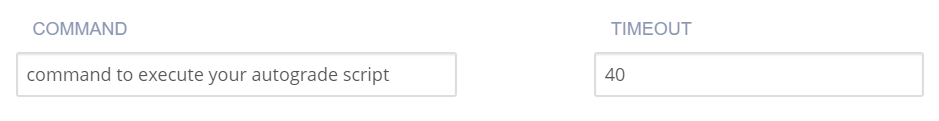
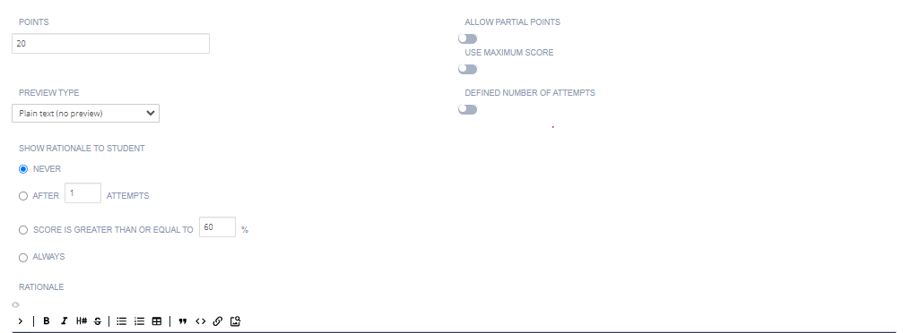

Free Text Autograde¶
The Free Text Autograde assessment is similar to the Free Text assessment in that it allows students to answer questions in their own words, but includes a field for a command line to execute a script that allows autograding. The answer to the question is stored in the environment variable CODIO_FREE_TEXT_ANSWER.
Follow these steps to set up an autograde free text assessment:
On the General page, enter the following information:

Name - Enter a short name that describes the test. This name is displayed in the teacher dashboard so the name should reflect the challenge and thereby be clear when reviewing.
Toggle the Show Name setting to hide the name in the challenge text the student sees.
Instruction - Enter text that is shown to the student using optional Markdown formatting.
Click Execution in the left navigation pane and complete the following fields:

Note
If you store the assessment scripts in the .guides/secure folder, they run securely and students cannot see the script or the files in the folder. The files can be dragged and dropped from the File Tree into the field to automatically populate the necessary execution and run code.
Command - Enter the command that executes the student code.
Timeout - Enter the time period (in seconds) that the test runs before terminating.
Click Grading in the navigation pane and complete the following fields:

Points - The score given to the student if the code test passes. You can enter any positive numeric value. If this assessment should not be graded, enter 0 points.
Allow Partial Points - Toggle to enable a percentage of total points to be given based on the percentage of answers they correctly answer.
Preview Type - Choose the input (plaintext or markdown) to be provided by the student. LaTex is also supported and is useful when students need to enter mathematical formulas in their answers. The following options are available:
Plaintext - Students enter ordinary text with no markdown formatting; there is no preview window.
Plaintext + LaTeX - Students enter plaintext with no markdown formatting but offers support for LaTeX commands. A preview window is available where students can see the rendered LaTeX output.
Markdown + LaTeX - Students enter markdown that also offers support for LaTex commands. A preview window is available where students can see the rendered markdown with LaTeX output.
Define Number of Attempts - enable to allow and set the number of attempts students can make for this assessment. If disabled, the student can make unlimited attempts.
Show Rationale to Students - Toggle to display the rationale for the answer, to the student. This guidance information will be shown to students after they have submitted their answer and any time they view the assignment after marking it as completed. You can set when to show this selecting from Never, After x attempts, If score is greater than or equal to a % of the total or Always
Rationale - Enter guidance for the assessment. This is always visible to the teacher when the project is opened in the course or when opening the student’s project.
Use maximum score - Toggle to enable assessment final score to be the Highest score attained of all runs.
Click on the Parameters tab if you wish to edit/change Parameterized Assessments (deprecated) using a script. See Parameterized Assessments for more information. New parameterized assessments can no longer be set up.
Click Metadata in the left navigation pane and complete the following fields:

Bloom’s Level - Click the drop-down and choose the level of Bloom’s Taxonomy: https://cft.vanderbilt.edu/guides-sub-pages/blooms-taxonomy/ for the current assessment.
Learning Objectives The objectives are the specific educational goal of the current assessment. Typically, objectives begin with Students Will Be Able To (SWBAT). For example, if an assessment asks the student to predict the output of a recursive code segment, then the Learning Objectives could be SWBAT follow the flow of recursive execution.
Tags - By default, Content and Programming Language tags are provided and required. To add another tag, click Add Tag and enter the name and values.
Click Files in the left navigation pane and check the check boxes for additional external files to be included with the assessment when adding it to an assessment library. The files are then included in the Additional content list.

Click Create to complete the process.
Example scripts for free-text auto-grade with all or nothing scoring¶
#!/usr/bin/env bash
# Initialize variables
TOTAL_POINTS=10
POINTS=0
# Check for the term "immutable"
if [[ $CODIO_FREE_TEXT_ANSWER == *"immutable"* ]]; then
POINTS=$((POINTS + 5))
else
echo "❌ You did not specify that a Tuple is immutable. "
fi
# Check for the term "data structure"
if [[ $CODIO_FREE_TEXT_ANSWER == *"data structure"* ]]; then
POINTS=$((POINTS + 5))
else
echo "❌ You did not qualify that a Tuple is a data structure. "
fi
# If both terms were found, set the feedback buffer to "Your answer has passed"
if [ $POINTS -eq $TOTAL_POINTS ]; then
echo "✅ Your answer has passed."
exit 0
fi
exit 1;
#!/usr/bin/env python
import os, sys
sys.path.append('/usr/share/codio/assessments')
from lib.grade import send_grade_v2, FORMAT_V2_MD, FORMAT_V2_HTML, FORMAT_V2_TXT
text = os.environ['CODIO_FREE_TEXT_ANSWER']
points = 0
total = 10
# check for required key words
if 'immutable' in text:
points+=5
else:
print("❌ You did not specify that a Tuple is immutable. ")
if 'data structure' in text:
points+=5
else:
print("❌ You did not qualify that a Tuple is a data structure. ")
if points==10:
print("✅ Your answer has passed. ")
exit(0)
exit(1)
Example scripts for free-text auto-grade with partial points¶
#!/usr/bin/env bash
# Initialize variables
TOTAL_POINTS=10
POINTS=0
FEEDBACK_BUFFER=""
# Check for the term "immutable"
if [[ $CODIO_FREE_TEXT_ANSWER == *"immutable"* ]]; then
POINTS=$((POINTS + 5))
else
FEEDBACK_BUFFER+="❌ You did not specify that a Tuple is immutable. "
fi
# Check for the term "data structure"
if [[ $CODIO_FREE_TEXT_ANSWER == *"data structure"* ]]; then
POINTS=$((POINTS + 5))
else
FEEDBACK_BUFFER+="❌ You did not qualify that a Tuple is a data structure. "
fi
# If both terms were found, set the feedback buffer to "Your answer has passed"
if [ $POINTS -eq $TOTAL_POINTS ]; then
FEEDBACK_BUFFER+="✅ Your answer has passed."
fi
# Calculate the percentage score
PERCENTAGE=$(($POINTS * 100 / $TOTAL_POINTS))
curl -s "$CODIO_PARTIAL_POINTS_V2_URL" -d points=$PERCENTAGE -d format=md -d feedback="$FEEDBACK_BUFFER"
#!/usr/bin/env python
import os, sys
text = os.environ['CODIO_FREE_TEXT_ANSWER']
sys.path.append('/usr/share/codio/assessments')
from lib.grade import send_partial_v2, FORMAT_V2_MD, FORMAT_V2_HTML, FORMAT_V2_TXT
def main():
points = 0
total = 10
feedback = ''
# check for required key words
if 'immutable' in text:
points+=5
else:
feedback+="❌ You did not specify that a Tuple is immutable. "
if 'data structure' in text:
points+=5
else:
feedback+="❌ You did not qualify that a Tuple is a data structure. "
if points==10:
feedback+="✅ Your answer has passed. "
# calculate percent out of total
percent = (points/total)*100
# feedback+= "<h2>On this question you earned " + str(points) + " out of " + str(total) + " </h2>"
res = send_partial_v2(percent, feedback, FORMAT_V2_HTML)
exit( 0 if res else 1)
main()
Automatically grade a Free Text assessment correct¶
This technique can be used to automatically mark the assessment correct for students who have submitted anything in the response. In the Command field on the Execution tab enter the command below:
/bin/true
You can use the Rationale field on the Grading tab to provide feedback since you aren’t running an actual script.